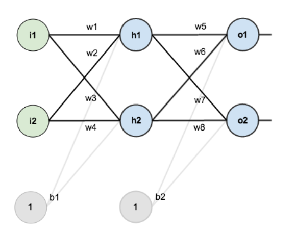
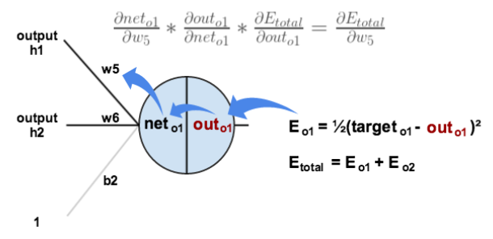
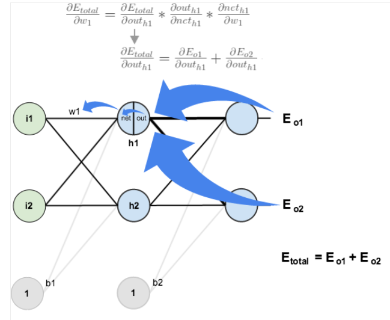

Алгоритм обратного распространения ошибки
Цель алгоритма - обновить вес каждой связи в сети так, чтобы получаемые на выходе значения были как можно ближе к целевым значениям, тем самым уменьшая ошибку как для каждого выходного нейрона, так и для сети в целом.
После ввода начальных данных и прохождения сигнала по сети нейроны выходного слоя формируют ответ. При обучении полученный ответ сравнивается с целевым значением, вычисляется ошибка для каждого нейрона и для сети в целом (с помощью функции потерь).
Чтобы оценить хорошо или плохо сеть решает поставленные задачи строится целевая функция для всей сети, а для каждого выходного нейрона - функция оценки (другое название функция потерь; на англ.: cost function и loss function соответственно).
Самая простая функция оценки - квадратичная, ошибка на произвольном нейроне выходного слоя равна:
errorj=(targetj−outputj)2Простая целевая функция для всей сети - квадратичная, полученная по методу наименьших квадратов:
Etotal=21j∑(targetj−outputj)2Обратное распространение ошибки и обновление весов происходит от выходного слоя к входному.
Разные источники используют разную нотацию при обозначении функции активации, целевой и сумматорной функций. Для наглядности приведена таблица обозначений в источниках, использованных при написании данной пояснительной записки:
| Обозначаемый элемент |
Первый вариант нотации |
Второй вариант нотации |
| Целевая функция |
C или J |
Etotal или Q |
| Значение на выходе после активации |
a |
out |
| Сумматорная функция |
z |
net |
| Функция активации |
σ |
g или σ |
| Коэф. скорости обучения (learning rate) |
η |
η (возм. ϵ или α) |
| момент (momentum) |
α (возм. μ) |
α (возм. ρ) |
Сумматорная функция выполняет сложение взвешенных входов в нейрон. В общем виде для нейрона j из слоя с номером l можно записать:
zjl=k∑wjklakl−1+bjlгде:
- wjkl - вес связи которая соединяет текущий нейрон j (в слое l) c нейроном k из предыдущего слоя (номер предыдущего слоя l-1)
- akl−1 - значение на выходе нейрона k из предыдущего слоя после применения функции активации.
Значение на выходе нейрона j из слоя l после активации в общем виде можно записать:
ajl=σ(k∑wjklakl−1+bjl)=σ(zjl)где σ- функция активации (activation function или другое название transfer function).
В качестве функции активации (σ) примем гиперболический тангенс(см. рис.4)

Рис.4. Гиперболический тангенс
Для изменения весов воспользуемся самым простым уравнением (позже немного усложним его):
(wjkl)′=wjkl−η∂wjkl∂Cгде η - коэффициент скорости обучения (learning rate)
Выходной слой
Рассмотрим алгоритм на примере простой трёхслойно сети (см.рис 5)
Рис. 5 Простая сеть
Нам необходимо определить какой вклад в общую ошибку вносит каждая связь нейронов выходного слоя с предыдущим слоем. Рассмотрим, какой вклад вносит связь первого нейрона выходного слоя с первым нейроном последнего скрытого слоя (вес w5). Т.е. необходимо вычислить частную производную целевой функции Etotal по весу w5. Ошибка является функцией выходных значений, выходное значение - функцией суммы взвешенных входов, сумма входов - функцией от взвешенных входов. Тогда, применяя цепное правило можем записать:
∂w5∂Etotal=∂outo1∂Etotal⋅∂neto1∂outo1⋅∂w5∂neto1Или в более наглядном виде:

Рис.6 Вычисление вклада одной связи в общую ошибку.
Ошибка (дельта) в нейроне j слоя l по определению равна:
δjl≡∂zjl∂CИли в другой нотации:
δjl≡∂netjl∂EtotalОшибка (дельта) в нейроне j выходного слоя L равна:
δjL≡∂ajL∂C⋅σ′(zjL)Или:
δjL≡∂outjL∂Etotal⋅σ′(netjL)В матричном виде:
δL=∇aC⊙σ′(zL)где:
- ∇aC - градиент вектора C
- ⊙ - произведение Адамара.
Частная производная ошибки сети по выходному значению нейрона последнего слоя:
∂outjL∂Etotal=∂outputj∂(21∑j(targetj−outputj)2)=(targetj−outputj)⋅(−1)=outputj−targetjТогда, произведение первых двух частных производных из уравнения перед рис.6 можно переписать в виде:
∂outo1∂Etotal⋅∂neto1∂outo1=∂neto1∂Etotal=δo1Как уже упоминалось, эта частная производная в некоторых источниках называют дельтой (node delta).
Само же уравнение примет вид:
∂w5∂Etotal=δo1⋅∂w5∂neto1После вычисления вклада веса связи в ошибку, можем найти новое значение веса:
w5+=w5−η⋅∂w5∂Etotalгде η - коэффициент скорости обучения сети (learning rate)
Подобным образом находим новые значения всех оставшихся весов связей между выходным слоем и последним скрытым - w6, w7, w8 (см. рис. 5)
ВАЖНО
При дальнейшем выполнении алгоритма обратного распространения ошибки используются исходные веса (НЕ обновлённые). Все веса обновляются после того как будут вычислены их вклады в общую ошибку сети.
Скрытые слои
Продолжим движение к входному слою и вычислим новые значения весов w1, w2, w3, w4 (см.рис.4). Для этого нам потребуется вычислить вклад каждого из этих весов в общую ошибку:
∂w1∂Etotal=∂outh1∂Etotal⋅∂neth1∂outh1⋅∂w1∂neth1Более наглядно на рис. 7:

Рис.7 Вычисление вклада связи w1 в ошибку
Расчёт ошибки схож с расчётом для выходного слоя, однако, следует учесть, что выходное значение скрытого нейрона влияет на выходные значения всех нейронов последнего слоя и тем самым на ошибку.
Итак, согласно рис. 4, outh1 влияет на outo1 и на outo2, поэтому можем записать:
∂outh1∂Etotal=∂outh1∂Eo1+∂outh1∂Eo2Рассмотрим первое слагаемое:
∂outh1∂Eo1=∂neto1∂Eo1⋅∂outh1∂neto1Рассмотрим сомножители.
Первый сомножитель. Необходимо обратить внимание на следующее:
- по определению ошибка в узле это δjl≡∂netjl∂Etotal
- целевая функция представляет собой сумму ошибок в каждом узле выходного слоя:
Etotal=21∑j(targetj−outputj)2
Тогда для выходного слоя справедливо:
∂neto1∂Etotal=∂neto1∂Eo1Таким образом:
∂neto1∂Eo1=δo1Второй сомножитель.
Распишем neto1(по рис.5):
neto1=w5⋅outh1+w6⋅outh2+b2⋅1Тогда:
∂outh1∂neto1=w5Перепишем формулу для ∂outh1∂Eo1:
∂outh1∂Eo1=δo1⋅w5По аналогии получаем, что:
∂outh1∂Eo2=δo2⋅w7Общий вклад в ошибку сети от выхода нейрона скрытого слоя:
∂outh1∂Etotal=∂outh1∂Eo1+∂outh1∂Eo2=δo1⋅w5+δo2⋅w7Вернёмся к формуле
∂w1∂Etotal=∂outh1∂Etotal⋅∂neth1∂outh1⋅∂w1∂neth1Первые 2 сомножителя равны ошибке узла по определению:
δh1≡∂neth1∂Etotal=∂outh1∂Etotal⋅∂neth1∂outh1=(δo1⋅w5+δo2⋅w7)⋅σ′(neth1)
Приведём без доказательства формулу для вычисления ошибки в узле j слоя l в общем случае:
δjl=k∑wkjl+1δkl+1σ′(zjl)Или в другой нотации:
δjl=k∑wkjl+1δkl+1σ′(netjl)
Итак, для рис.5:
∂w1∂Etotal=∂outh1∂Etotal⋅∂neth1∂outh1⋅∂w1∂neth1=δh1⋅∂w1∂neth1=δh1⋅i1где i1 - значение (выходное) первого нейрона входного слоя
Новый вес w1:
w1+=w1−η⋅∂w1∂Etotal=w1−η⋅δh1⋅i1Аналогичным образом получим новые значения для весов w2, w3, w4.
Краткий итог
Выпишем формулы, которые потребуются для реализации алгоритма.
Целевая функция:
C=Etotal=21j∑(targetj−outputj)2Вектор ошибок в нейронах выходного слоя:
δL=∇aC⊙σ′(zL)Компоненты градиента для нейронов выходного слоя:
∂ajL∂C=∂outjL∂Etotal=∂outputj∂(21∑j(targetj−outputj)2)=(targetj−outputj)⋅(−1)=outputj−targetjПроизводная гиперболического тангенса:
tanh′x=dxdtanhx=1−tanh2xИсходя из предыдущего уравнения для нашей сети справедливо:
σ′(zjL)=tanh′(zjL)=1−tanh(zjL)⋅tanh(zjL)=1−σ(zjL)⋅σ(zjL)Ошибка в узлах скрытого слоя:
δjl=k∑wkjl+1δkl+1σ′(zjl)Перепишем формулу в более удобном виде и каждый множитель впоследствии реализуем отдельной функцией:
δjl=σ′(zjl)⋅k∑wkjl+1δkl+1Простая формула для обновления весов связей:
(wjkl)′=wjkl+Δwjkl=wjkl−η∂wjkl∂Cгде
∂wjkl∂C=akl−1δjlВ реализации воспользуемся чуть более сложной версией формулы. Изменение веса на итерации t:
Δwjkl(t)=−η∂wjkl(t)∂C+αΔwjkl(t−1)После подстановки:
Δwjkl(t)=−η(akl−1(t)δjl(t))+αΔwjkl(t−1)Фактически используемы вариант формулы:
(wjkl)′=wjkl+Δwjkl=wjkl−η(akl−1δjl)+α(Δwjkl)′′где :
- (Δwjkl)′′ - изменение веса на предыдущей итерации. Фактически мы добавили к начальной формуле только это слагаемое с коэффициентом.
- j - текущий нейрон в слое l
- k - нейрон из предыдущего слоя